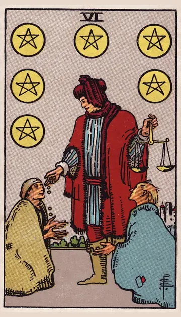

正位置ペンタクルの6の正位置
キーワード：与える・受け取る・思いやり
恋愛
思いやりを、与え合える時です。
相手の気持ちあなたに、何かしてあげたいと感じているようです。
この先お互いに支え合える関係になりそうです。
アドバイス相手が喜ぶことを、してあげましょう。
気をつけること与えすぎて、自分が疲れないように。
この先お互いに支え合える関係になりそうです。
アドバイス相手が喜ぶことを、してあげましょう。
気をつけること与えすぎて、自分が疲れないように。
人間関係
助け合いの気持ちが、関係を温める時です。
相手の気持ちあなたに、感謝の気持ちを持っているようです。
この先助け合える仲間が、増えそうです。
アドバイス困っている人に、手を差し伸べましょう。
気をつけること上から目線にならないように。
この先助け合える仲間が、増えそうです。
アドバイス困っている人に、手を差し伸べましょう。
気をつけること上から目線にならないように。
仕事・学業
努力に見合った報酬や、支援が得られる時期です。
この先支援や援助が、得られそうです。
アドバイス教わったことは、次の人に伝えましょう。
気をつけること見返りを期待しすぎないように。
アドバイス教わったことは、次の人に伝えましょう。
気をつけること見返りを期待しすぎないように。
お金
お金の支援や援助が、得られやすい時です。
この先思わぬ援助がありそうです。
アドバイス受け取れる支援は、素直に受け取りましょう。
気をつけること貸し借りを、あいまいにしないように。
アドバイス受け取れる支援は、素直に受け取りましょう。
気をつけること貸し借りを、あいまいにしないように。
生活
助け合いが、暮らしを温める時です。
この先助け合える関係に恵まれそうです。
アドバイス困っている人に、手を差し伸べましょう。
気をつけること与えすぎて、自分が疲れないように。
アドバイス困っている人に、手を差し伸べましょう。
気をつけること与えすぎて、自分が疲れないように。
今日の運勢
親切が返ってくる日です。
この先思わぬ親切に、出会えそうです。
アドバイス誰かに、ささやかな贈り物をしてみましょう。
気をつけること人に甘えすぎないように。
アドバイス誰かに、ささやかな贈り物をしてみましょう。
気をつけること人に甘えすぎないように。
逆位置ペンタクルの6の逆位置
キーワード：不公平・見返り・一方的
恋愛
与える側と受け取る側が、偏りやすい時です。
相手の気持ちあなたとの関係で、与える量に偏りを感じているようです。
この先バランスが整えば、関係が安定しそうです。
アドバイス無理なく、お互いに与え合える形を探しましょう。
気をつけること尽くしすぎて、関係が一方的にならないように。
この先バランスが整えば、関係が安定しそうです。
アドバイス無理なく、お互いに与え合える形を探しましょう。
気をつけること尽くしすぎて、関係が一方的にならないように。
人間関係
見返りを求める気持ちが、出やすい時です。
相手の気持ちあなたに頼りすぎていると、感じているのかもしれません。
この先対等な関係を、築けそうです。
アドバイス見返りを求めずに、できることをしましょう。
気をつけること貸し借りを、あいまいにしないように。
この先対等な関係を、築けそうです。
アドバイス見返りを求めずに、できることをしましょう。
気をつけること貸し借りを、あいまいにしないように。
仕事・学業
報酬や評価に、不公平を感じやすい時期です。
この先正当な評価が、得られそうです。
アドバイス正当な評価を、落ち着いて求めましょう。
気をつけること条件の悪い話に、乗らないように。
アドバイス正当な評価を、落ち着いて求めましょう。
気をつけること条件の悪い話に、乗らないように。
お金
お金のやりとりで、不公平を感じやすい時です。
この先対等な関係に戻れそうです。
アドバイス貸し借りの記録を、残しておきましょう。
気をつけること条件の悪い話に、乗らないように。
アドバイス貸し借りの記録を、残しておきましょう。
気をつけること条件の悪い話に、乗らないように。
生活
助け合いのバランスが、崩れやすい時です。
この先バランスが整いそうです。
アドバイス無理のない範囲で、人と関わりましょう。
気をつけること頼まれごとを、断れずに抱えないように。
アドバイス無理のない範囲で、人と関わりましょう。
気をつけること頼まれごとを、断れずに抱えないように。
今日の運勢
損をしたと感じやすい日です。
この先気持ちが軽くなりそうです。
アドバイス自分にも、ご褒美をあげましょう。
気をつけること人に頼りすぎないように。
アドバイス自分にも、ご褒美をあげましょう。
気をつけること人に頼りすぎないように。
このページの文章は、アプリ「ひとやすみタロット」の結果に使っている文章です。アプリでは、あなたの相談や、カードが出た位置（今の状況・これからの流れ・アドバイス）に合わせて、この中から文章を選びます。逆位置の読み方は逆位置のことをご覧ください。
「ペンタクルの6」が出たら、あなたの相談ではどう読む？
アプリでは、質問への答えに合わせて、カードの言葉をあなたの相談に合わせて届けます。
Android 対応・会員登録なし